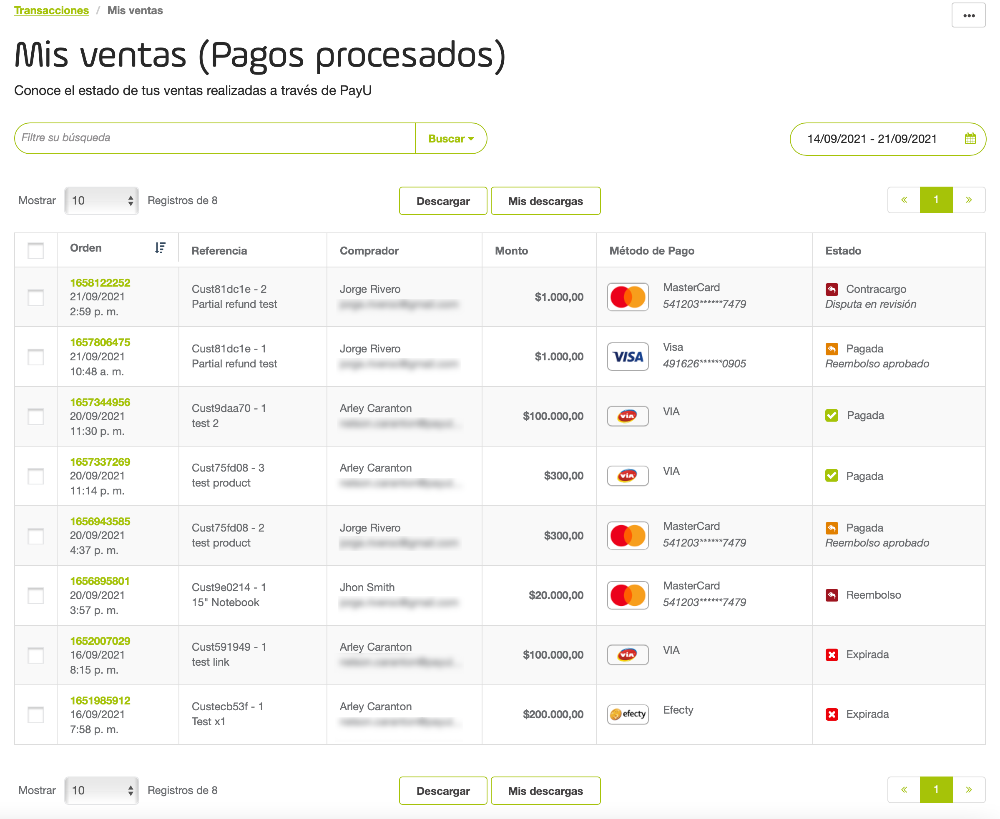
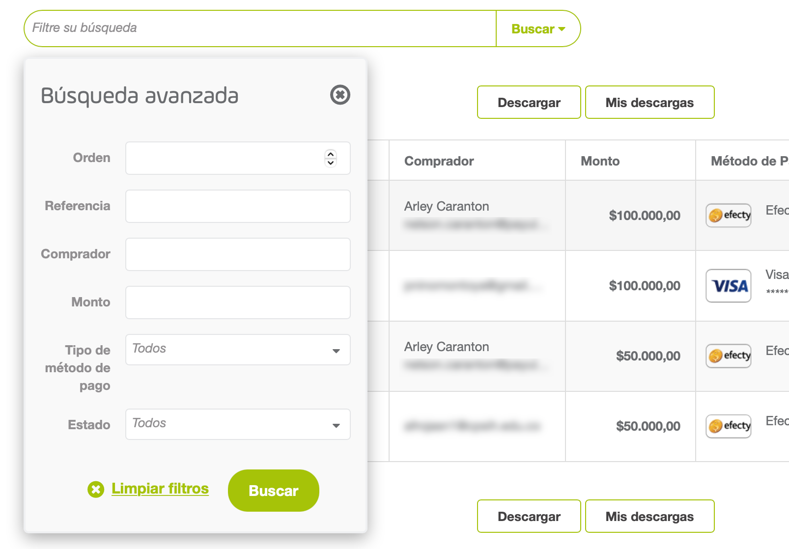
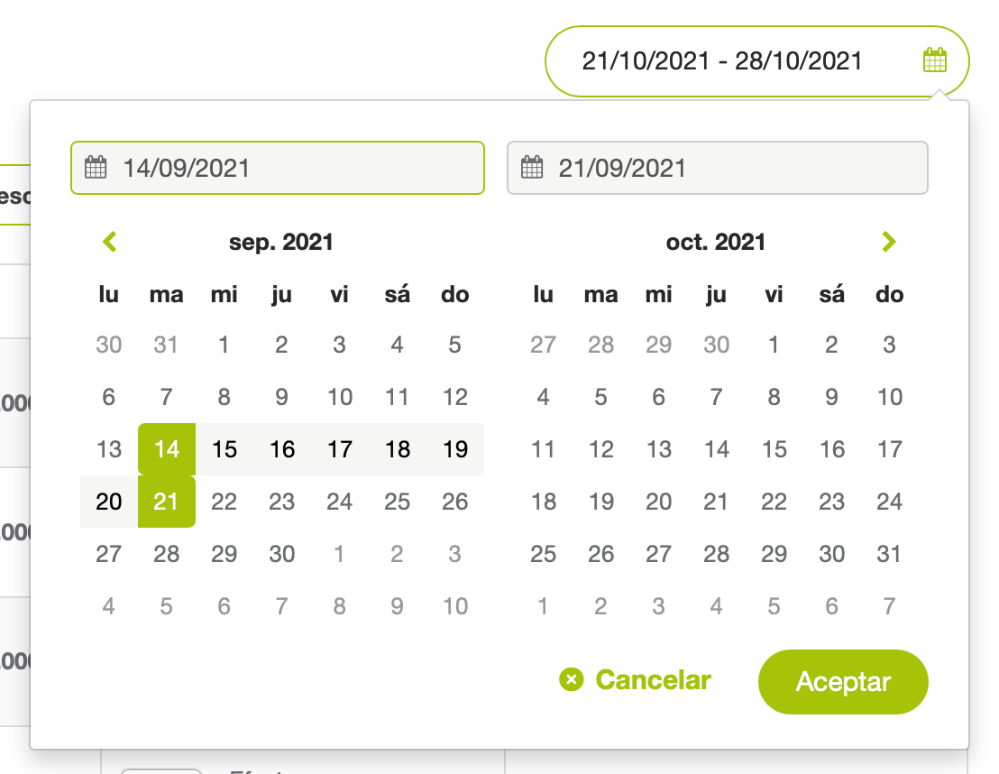
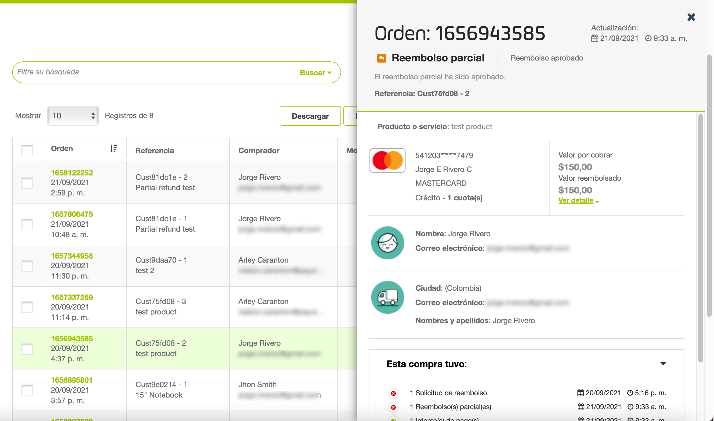
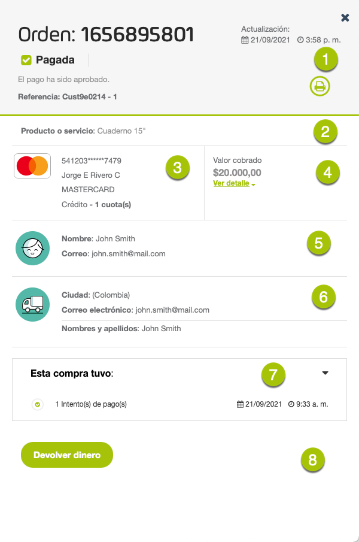
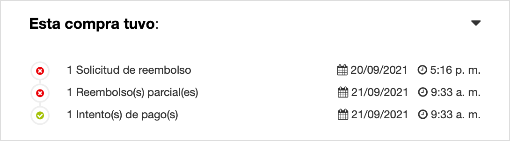
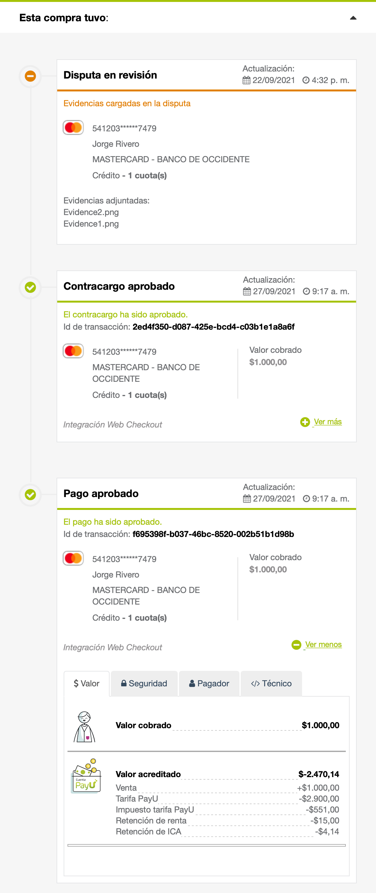
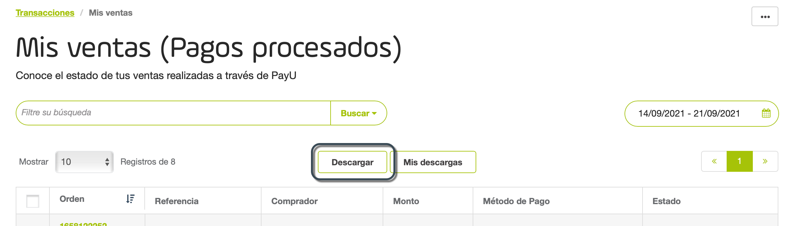

Reporte de ventas
Nota
Los reportes en el Módulo PayU están limitados a 20 mil filas para visualización y descarga. Si necesitas tener reportes personalizados o mostrar más información, comunícate con tu representante de ventas.Permisos requeridos
Para tener acceso a este módulo, necesitas un perfil con el permiso Reportes > Reporte de Ventas activado.
Consulta Perfiles y Permisos para más información.
Consultar el reporte
Ingresa a tu cuenta PayU. En el menú de la izquierda, expande el menú Transacciones y selecciona Reporte de Ventas.

En el reporte, puedes ver un cuadro de filtro y la lista de tus últimas ventas. De forma predeterminada, el reporte muestra la información de ventas* de los últimos siete días, desde el más reciente al más antiguo.
*Limitado a 20 mil registros.

El reporte tiene las siguientes columnas:
| Columna | Descripción |
|---|---|
| Orden | Esta columna muestra el identificador de la orden junto con la fecha de la venta. |
| Referencia | Esta columna muestra la referencia de venta y el nombre del producto o servicio ofrecido. |
| Comprador | Esta columna muestra el nombre y la dirección de correo electrónico de la persona que hizo la compra. |
| Monto | Monto de la venta. |
| Método de pago | Información del método de pago utilizado por el comprador. |
| Estado | Estado actual de la orden. |
Nota
Si necesitas mostrar más información, consulta tu representante de ventasConsulta los detalles de la orden para conocer todo el detalle de la transacción de la venta.
Filtrar el reporte
Puedes utilizar la barra de búsqueda sobre el gráfico o el calendario para establecer filtros. Puedes filtrar por Referencia, Orden, Comprador, Monto, estado o Método de pago.
Para establecer un filtro, haz clic en el campo Filtre su búsqueda sobre la tabla del reporte.

Configura los valores de los filtros y haz clic en Buscar. Una vez hayas hecho clic, la tabla de filtros muestra las ventas que cumplen con los criterios seleccionados.
Junto con estos filtros, también puedes establecer un período de tiempo en el que el comprador realizó la compra utilizando el filtro de fechas en la esquina superior derecha.

El rango de fechas de este filtro es un (1) mes antes de la fecha final. Si excedes este rango, el reporte muestra la información de un (1) mes después de la fecha de inicio.
Para ver la información de una fecha específica, configúrala tanto para la fecha de inicio como para la fecha fin.
Detalles de la transacción
Puedes revisar los detalles de la transacción en línea. Para hacer esto, haz clic en el pedido que quieras consultar en la tabla de reporte. Los detalles de la transacción aparecen en el panel derecho.

El panel Detalles de la transacción tiene las siguientes secciones:

| Nombre | Descripción | |
|---|---|---|
| 1 | Información de la orden | Esta sección muestra el ID de la orden, su última fecha de actualización, su estado junto con la descripción del mismo y la referencia de venta. Esta sección también muestra un botón que te permite imprimir los detalles del pedido. |
| 2 | Producto o servicio | Descripción del producto o servicio que brindó en la venta. |
| 3 | Método de pago | Información del Método de pago utilizado en la compra. La información que se muestra en esta sección varía según el método de pago. Para pagos en efectivo pendientes, esta sección le permite ver el recibo de pago generado para el comprador. |
| 4 | Valores | Esta sección muestra los valores involucrados en esta transacción, como el Valor a cobrar (o cobrado), Valor pendiente, Valor reembolsado (para reembolsos), Valor expirado (Para pagos en efectivo). |
| 5 | Información del Comprador | Información de la persona que realizó la compra. |
| 6 | Información de envío | Información de las opciones de envío. |
| 7 | Esta compra tuvo | Transacciones asociadas e esta compra. Haz clic en el simbolo ▾ para encontrar el histórico de las transacciones.  |
| 8 | Actions | Acciones disponibles sobre la orden. |
Histórico de la transacción
Cuando expandes la sección Esta compra tuvo, puedes ver los detalles de cada transacción asociada a una orden.

La información disponible incluye los valores debitados de tu cuenta, el método de pago, la información del pagador y más.
Descargar el reporte
Para descargar el reporte, haz clic en el botón Descargar ubicado en la parte superior o inferior de la tabla del reporte.

Aparece una ventana emergente donde puedes seleccionar las opciones para generar el reporte:
- Reporte: te permite generar un reporte con el estado de las órdenes y el estado final de la última transacción o intento de compra relacionado con esa orden.
- Versión del antiguo Módulo Administrativo: te permite generar un reporte con todas las transacciones y muestra la información del comprador y pagador (correo electrónico, nombre, número de documento)*.
Nota
* Si el formato del archivo no se ajusta a tus necesidades, comunícate con tu ejecutivo de ventas para conocer más sobre la opción de enviar archivos a través de SFTP y las plantillas que tenemos para este reporte.El reporte se descarga automáticamente en formato de Excel (.csv). El nombre del reporte utiliza los siguientes formatos
- Opción Reporte: [FechaDescargaEnMilisegundos]_orders_[AccountId].csv
- Opción Versión del antiguo Módulo Administrativo: [AccountId]_[FechaDescarga]_transactions.csv*
* fecha de descarga en formato dd-mm-yy-hh-mm-ss